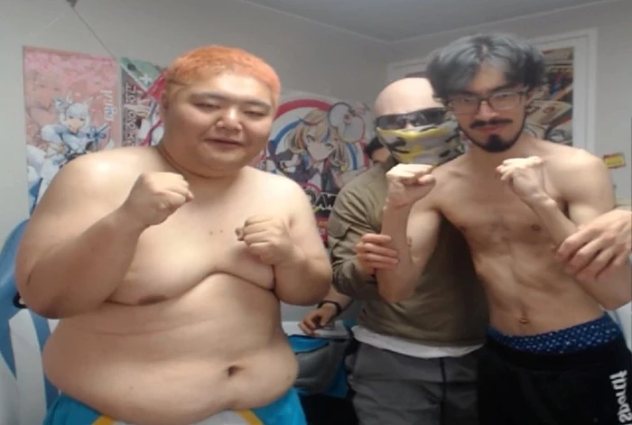
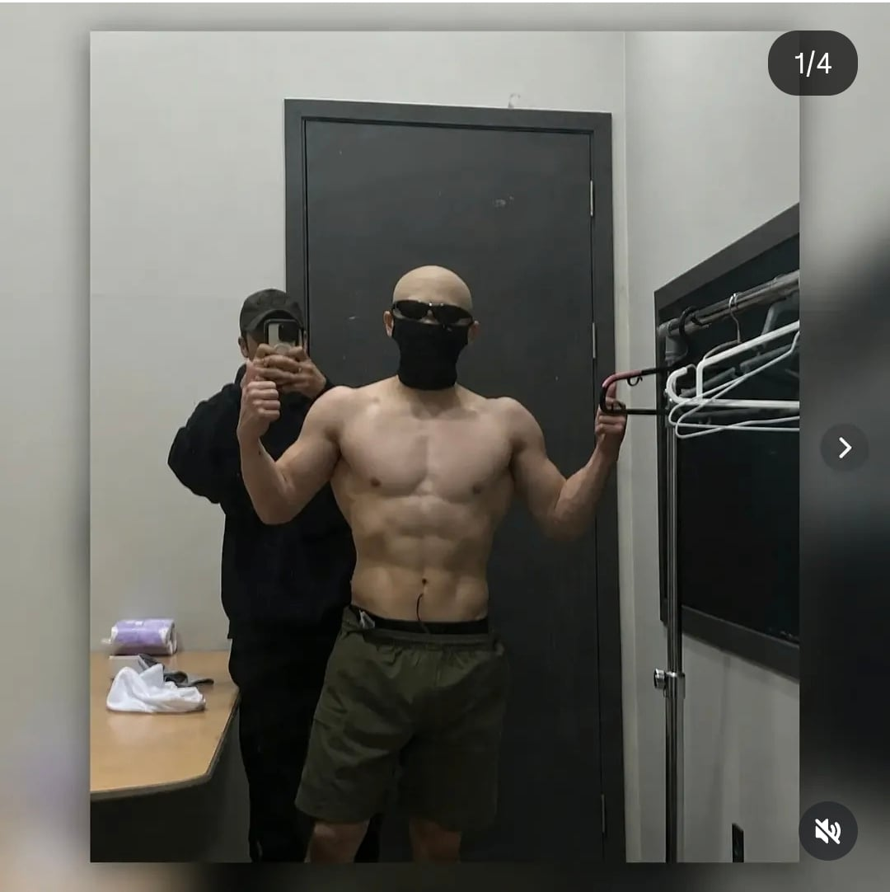

김계란이 멸치, 돼지 감금시키고 해봤는데
딱 감금 시기에만 성공함... 결국 모두 원래대로 돌아감...
찌우는 것도 빼는 것도 쉽지 않음
아구통 의사도, 김계란도 못했는데
쉽다는 사람들은 뭘까


김계란이 멸치, 돼지 감금시키고 해봤는데
딱 감금 시기에만 성공함... 결국 모두 원래대로 돌아감...
찌우는 것도 빼는 것도 쉽지 않음
아구통 의사도, 김계란도 못했는데
쉽다는 사람들은 뭘까
살찌는 약은 만들기 쉬울거같은데
건강이 개씹창 날 듯
살찌우는게 근육을 늘린다는게 아니면 지방을 늘려야되는데 무조건 박살남
뭐기는 '할수있다 나라면'이지
실제 성공사례가 존재하기도 하고
힘들긴함
본인 60에서 95까지 근돼로 바꿔서 유지중인데
먹고 토한적도 많음
활동량을 기존에 두배 세배로 늘리기도했음
저사람들도 하면 하겠지만 저것도 컨텐츠니까 유지하는부분도 있지않을까
나도 멸치라 살 찌워봣는데 바로 대장에 염증생겨서 3일간 입원치료함
감량만 하는거면 누구나 가능함
문제는 현대사회에서 평범하게 일하고 살아야하는 사람이 살 빠진 상태를 평생 유지하는건 진짜 극소수만 가능함
돈 많고 스트레스 안받는 백수라면야 감량 상태 유지에 쓸 정신력이 남으니까 버틸수 있지만 뭐라도 일하는 사람이면 언젠가는 체중유지 못하고 무너지는거임
근데 시간이 갈수록 비만율이 늘어가는데 유전자상 의지로 극복이 불가능한거면 점점 비만유전자가 많아지는거임?? 이상하게 위고비 마운자로 같은거 나오고부터 유전자만능론이 나오는데 그럼 약없을땐 다이어트 한 사람이 없었나 결국 진짜 극단적인 사례 제외하면 개선 가능한 식습관과 생활습관이 우선적인 문제인거 아님??
https://www.dogdrip.net/dogdrip/721989020?_filter=search&search_target=title_content&search_keyword=%EB%8B%A4%EC%9D%B4%EC%96%B4%ED%8A%B8&page=1
https://www.dogdrip.net/dogdrip/721987696?_filter=search&search_target=comment&search_keyword=%EC%84%9C%EC%9A%B8%EB%8C%80&page=1
그게 그렇게 쉬우면 살찐 사람 없지
기사들이 단벌 갑옷에 몸을 맞춰서 살 빼던 사례는 있는데 그 쪽은 뭐 인간 흉기들이니 논외라고 치고,
중세 다이어트약에 비소, 수은 들어감. 살이 빠지긴 했겠지. 가끔 0kg이 되기도 하고
조선 군주로 보면 태종 직계라 인간흉기 유전자 타고난 세종대왕님도 비만/당뇨 걸렸고
영조쯤 되는 독한 군주나 식습관과 생활습관으로 극복했다
유전자도 있지만 비만은 이제는 질병이지
평생 관리해야 하는 성인병
한번 균형이 망가지면 어지간해선 되돌리기 힘듬 지난번에 연구결과를 봤는데 운동 선수까진 아니지만 몸 체질이 바뀌는데 수년이 걸린다고 하니까
칼로리제한정도가 비슷하게 컨트롤그룹을짜서 실험한거보면 확연히 위고비그룹이 몸무게가 낮아짐. 반짝 한게아니고 52주 추적관찰. 나도 백수때 30키로넘게빼긴했는데 한 5년걸쳐 돌아갔는데 진짜 빼는동안은 백수때라 하루 1000칼로리언저리에 운동 하루에 2-3시간하고 힘없으니 맨날 퍼잠. 근대 그래봐야 처음에만 빨리빠지고 한달에 3키로정도빠지더라고.. 실제로 요구되는 식습관수준이 일하면서 유지할만한 수준이 아님.
플라이랑 헤비급은 태어날 때부터 그냥 정해지는거임 플라이급은 약물 제외하고 뭔짓을 하더라도 헤비급이 될 수 없음 내가 20살 때 183/61kg이였는데 군대가서 65kg까지는 아점저 다 챙겨먹고 규칙적인 생활하니까 별도의 노력없이 되더라고 군대 전역하고 본격적으로 80kg 도전하려고 헬스 시작하고 하루 4끼 총 3000칼로리 식단했는데 1년 동안은 금방 72kg까지 갔다가 그 뒤로 아무리 3천칼로리 매일 먹어도 74kg가 한계였음 내가 이걸 2년을 했는데도 76kg에서 더 이상 안늘더라 그러다가 자전거 타다가 다리 다쳐서 2달 동안 운동이랑 식단 쉬었는데 진짜 딱 두달만에 69kg까지 순식간에 다시 빠졌음 그 뒤로 스트레스 받아서 그냥 69~70kg 유지하면서 사는중.. 걍 안되는 건 안되는거야 그렇다고 80kg 만들자고 돈 ㅈㄴ 많이 써가면서 고통스럽게 하루하루 4천칼로리 이렇게 먹을 수는 없음 시간도 없고 이제는 일 시작하니까 그럴 힘도 안남음
쯔양만들어주는 약물 개발하라고!!
수술은 있음
루와이 우회술이라고 음식이 소장으로 직통함
소화율 낮아짐
물론 많이 먹진 못함
원래는 사실 습관이 중요한건데 이제는 호르몬원툴하니까 탓하기가 조금 더 쉬워졌음. 그리고 이제는 아 그냥 마운자로 맞고 말지 뭐 이러니까 개노답이랄까
습관이 중요하다는 건 그냥 본인 생각이지 사실과는 상관이 없지요...
사람 습관이 무슨 운영체제 밀고 새로 까는 것 정도로 생각하는 것 같은데
그거 있잖아 숨만 쉬어도 근육 만들어주는 마법의 약물
대박;
근데 쟤넨 의지 자체가 없긴 했음..
과로사도 쫌 하다 탈주하고
공혁준은 흑자가 뭘 먹어도 좋으니 걸어서 시장가서 장봐라 딱 이것만 지켜봐라 했는데 그것도 못지켜서 배민 키고 그랬잖아
멸치는 힘든거 맞는데 돼지는 존나처먹어서 돼지인거잖아
난 개멸치 52키로에서 지금 83 근육좆되는 몸으로 바꿨는데
멸치는 나이들면 그래도 살찌더라
나도 비만은 의지박약에 게으른 인간이라 생각했는데
의사가 공혁준 진단해보더니 인내심이나 조절 능력이 제로에 가깝다는거 보고 식욕이랑 이런게 다 유전이구나
내가 타고난 유전자가 좋은거였구나 싶어서 이제 비만은 좀 안타까운 사람처럼 느껴짐
이걸로 과학이랑 기싸움하는 애들이 미국에서 태어났으면 멸균 안 된 우유 먹고 백신 안 맞고 그러는 거지ㅋㅋ
키 큰 사람과 키 작은 사람이 덩크슛 하는데 같은 노력이 필요할 리가 없는 것처럼
운동 안 하고 식생활 신경 안 써도 안 찌는 사람은 안 찜
의지력? 노력? 이상한 소리지
나는 의지력 싸움 같은 걸 해서 비만 억제한 것이 아님
걍 약 맞을 사람은 맞아야 돼
관리가 되고 의지로 극복할 수 있는 사람이 고도비만이 되겠냐고
김계란 몸 존나멋있다
애는 그냥 고지능적으로 돼지들 패는거같은데..?